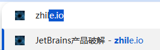

想知道始皇帝当初是怎么推广社区的，是投钱给的别人广告费进行的推广吗。自己的个人网站每次推广都会被各平台下降视频，没招了，佬友们的网站是如何推广的？ 
想知道始皇帝当初是怎么推广linuxdo社区的？
L站开始都是自来水吧，酒香不怕巷子深。
应该是一开始本身很有影响力 然后才建的站 不是硬推广的
因为对比 其他社区都拉跨成什么样了 对比一下 就鹤立鸡群了 xD
一开始好像是因为 pandora 比较火，后面也没有专门做推广，纯自来水
没有推广，唯有真诚
寻找引用中…
大意：“我从未在 L 站外的地方提及 L 站”
最好的推广，是产品力
其实说白了，有有羊毛可以薅，chat gpt从始至终
反正我当时进来的时候，就是 你们赢了，但我却没有输 - 资源荟萃 / 资源荟萃, Lv1 - LINUX DO。就是最早的镜像站那会，和gpt斗智斗勇
本身有影响力吧。 我记得我是Cursor插件来的
那也得让人知道有linuxdo的存在呀，很好奇是怎么让大众知道的
镜像站的项目 我记得是 claude gpt的镜像站项目都是NEO先搞的
感觉很多都是从v2ex过来的，分为比那边好
我是靠咕噜咕噜搜索教程找到L站的
{kind=link}
我注册应该挺早了，最开始是从zhile跳过来的
我最早混迹于始皇的电报群，那时候还没有L站呢，不过我潜水居多，某天看到他们在群里说到L站，就申请进来了。 始皇最早是知了吧，有了知了站留下了电报群，很多人在电报群里聊天，然后某天始皇说：我有一个点子……
先积累了一批原始用户,zhile,潘多拉知名项目， 具体我也记不清了，在后来好多人在其他论坛邀请，我就是这么进来的。我是大量发邀请的时候进来的，太早的我也不知道
https://zhile.io/
佬友可以了解一下
我好像是从 google 搜索 Linux 桌面发行版，了解到 L 站的 
 我是真以为这里是学Linux的，所以想申请加入看看里面有没有更多关于Linux的新闻和一些技巧。。。
我是真以为这里是学Linux的，所以想申请加入看看里面有没有更多关于Linux的新闻和一些技巧。。。
根本不需要推广，很多都是 zhile.io 转化过来的
不需要推广啊，早期就是想进都得邀请码，还不好找
好像没怎么推广吧？全靠佬友们宣传 
那zhile一开始是纯靠几个人人传人宣传的？
站长最开始是jetbrains的破解插件制作者,有一个博客,叫zhile.io这时候已经有一定的流量了,然后ai火起来后,又用python写了一个pandora,具体怎么用的楼上有说,总之很火,几万个star
然后创建了这个论坛,在zhile.io博客中引流到这个论坛
早期动不动就跟chatGPT斗智斗勇,经常能看到他发一些反代相关的东西,这些也是引流的一个来源
站长是搞这种东西的,那站内肯定都是薅羊毛的居多,就开始各种分享免费用大模型的帖子,比如以前经常说,但是现在没怎么见到的"C",这种资源多了肯定大家都愿意看啊,举个例子就是爱吾破解,一个类型
{kind=link}
我最早是在知了，跟IDEA斗智斗勇，到GPT刚出来的时候，了解到这个网站
原始用户积累本来就很多啊
之前还叫jetbrains-agent还是eval来着，后来叫ja-netfilter了
早就不是人传人了，是先火才有后来一步步的东西
那时候常规的博客公众号qq群什么的人就不少了
咦 为啥这个站点开没有弹窗提示, 直接就打开了…
原来是这样, 之前也用的zhile, 可以在线active, 后来不搞了之后也是跟着zhile的文章换了ja-netfilter 没想到是这个来头 牛
我是从使用pandora开始，再到pandora-next，后转移到tg，再从tg到L站这样的一个流程

没有推广，刚开始估计都是老 Pandora 用户
进不去，开/关 梯子都打不开，是我网络的问题么
我说这个链接这么熟悉，当时破解idea好像就是这个域名的
我最早知道L站 还是Google搜索资源找过来的 后面因为AI就长期逛了 
哈哈，我也进不去。@Neo 看看吧
我是。之前在Google搜问题的时候。经常会搜到站内的解决思路，知道的l站但是那时候l站注册不了，后来找大佬邀请写小作文进来的，l站的氛围很好啊，很多大佬会发布解决的思路。只是最近都是跟ai相关的了，前两年？应该是前两年吧，24-25年的时候，我开始折腾aio，nas，宽带，魔法上网一系列的时候发现的这个网站。今年我才进来的。
最开始是没有linuxdo的，最开始始皇的是想让所有人（国内用户）都能用是chatgpt3.5，然后始皇开了GitHub 潘多拉项目可以免费不用代理就能用3.5，然后被openai各种限制，仓库还被举报，实在没精力了就开了论坛，然后发了 https://linux.do/t/topic/1051/1 这个帖子
我也是，搜索影视作品的时候搜到的
这是啥呀？Gemini吗？总结得好全。
最一开始是始皇有了chatgpt的bugteam 引流到论坛的，发帖拉进team
最开始是为了学如何白嫖cursor搜到L站的，如今cursor已经凉了，但是L站越来越壮大 
你说的这个站。我怎么一直打不开啊。
这到底是干什么的一个网站啊。
L 站在谷歌的 SEO 很高，随便搜点啥知识相关的可能都有 L 站
这个站的服务器资源全用来建设 linux.do 了
最早不都是pandora过来的吗，始皇那篇长文记忆犹新啊
L站是秦始皇开的，zhile.io 是嬴政开的 
可能是潘多拉时期吧，之前始皇做了ChatGPT的免费镜像程序
你要不要听听看你在说什么。。。 
This floor was not visible when the archive was created.
最开始是潘多拉，我23年9月份跟人拼车gpt plus知道有这个项目，后面比较早注册了l站，但是后面一直掉登录就没上号看贴。这个号已经是浴火重生的第二个号了

之前存的书签还在
最开始是idea的plugin，然后ai出来之后又有pandora本地跑，然后是pandora的新版本，然后就建站了，建站之前都是在电报群里
啊，ide重置也是他搞得啊，确实
应该是自身有抓手的影响力的东西，楼上说的第一手流行软件破解，还有啥gpt，这些都是吸引了很多白嫖的，总之就是靠技术破局是一个点。也有其他的方式吸引，总之一句话天下熙熙，皆为利往。有技术就用技术转为money，没技术不就是撒真金白银推广吗
感觉绝大部分人都是为了AI进来的，包括我就是从之前的Pandora才了解到的
{kind=link}
linux.cn倒闭 因为名字像过来的，还有当初群用户的自发推广吧
一开始是有一个蛋兜头像telegram群组里面讨论破解idea相关的内容。直接是compilot出世，大佬破解compilot。接着这个网站横空出世，大家都开始响应。接着是dp翻译。 后面就是大家知道的事情了…
每天关注zhile知了博客，看看始皇写了啥，就到这里了
{kind=link}
始皇正在赶来，大家敬请期待。
不瞒你说，我当初是看到一个群友截图发的技术贴，然后我就来注册的。看到叫Linux社区我还以为都是Linux知识 
抢在始皇前面发一个消息，快合影啊
我也是哈哈哈哈哈哈，以为是Linux 
本身导了一发，闲来无事开始闲逛，闻着味我就进来了
我觉得是自来水，我是从V站过来的，当时本身始皇做的这些事情就很有热度，在知名社区有人提及，就不可收的全部过来了
当时我在搜索 Linux 文档，然后看到了这个域名就来了 
zhile 是唯一一个破解 jetbrains 的源头，而且坚持了很多年。只要搜 jetbrains 破解最后都能看到 zhile 这个站
 始皇建站开始就是和OpenAI干，没想到这么久过去了，论坛里还是在和openai对着干
始皇建站开始就是和OpenAI干，没想到这么久过去了，论坛里还是在和openai对着干
我再来揭示一个近乎残酷的真相（今天第二个  ）：黑子的宣传力度，要远比正常用户的大！
）：黑子的宣传力度，要远比正常用户的大！
正常用户可能会宣传，更可能默默地自己玩。但黑子，是一定会大力去“宣传”的，这是忠实的宣传口径。
有人说，你不怕黑子给你黑完了吗？坦白说不怕的。
我们试着用上午我说的鱼水比喻进行延伸：如果有人跟你说，某个地方水太深了，你过去肯定会被淹死。作为一个旱鸭子，你肯定就退避三舍了；但如果你是一只鱼，那对你来说就是天堂。你会因为他说水深就不去吗？
小马过河的典故我们从小就学过，总归要自己试试的。
谷歌搜索教程来着，L站排前面，点进来看了一下，寻思着这网站咋还需要邀请码注册。 

楼主，来看这就是焚诀
@ldt666
最开始是不用邀请码的，后面要邀请码去tg很容易就能要到也不用写小作文，再后面就是申请表也比较轻松，然后一周年全面大开放注册不用邀请码，到现在注册要邀请码和小作文
这题我会 地铁口发小广告 没事再印点小卡片扔共享单车 
咋火的，靠破解，全家桶，很多小白用，各贩子自动宣传，源头是这里，慢慢的用户就多了。
谢谢你，但我们这种小作坊可能有点扛不住，一堆黑子一攻击自己的服务器也许就瘫了
我记得我是从tg上知道的，最开始没太在意，后来才注册的。
对，我想起来了，之前看过这个帖子来着，互联网记忆太多，最后啥都忘了 
应该是口口相传的吧，之前很早就听说了，后面发现来迟了
当时用始皇的Pandora，某一天用不了了，看到始皇发了个贴你们赢了但俺没有输，遂过来注册留言缅怀Pandora+感谢始皇
V站里有人给我推荐了始皇的中转站  然后我就来了，想起来始皇那儿我充的钱还没用完呢
然后我就来了，想起来始皇那儿我充的钱还没用完呢
想了半天都忘记自己当初是怎么来社区的了。现在每天都至少浏览一两次
当初是潘多拉盛行的时候，电报交流群还在，在我用的上瘾的时候，突然有一天拉闸了，而且在zhile里面有说明，然后我就来了，我怎么记得，那个时候，不需要小作文呢
现在linuxdo在各个搜索引擎和大模型搜索权重里面非常高，感觉差不多是第一中文技术社区了。gpt搜索o问题就很喜欢去找linuxdo 
这还要推广？Pandora/Sharedchat当年的雄风根本不需要推广
始皇当时自带流量啊 Pandora 直接起飞
我是当时好像kiro啥的，有人把注册机在github上提了issue和官方反馈，那个时候看到了neo的封禁贴，才知道这个社区的 
+1，我甚至有点忘了zhile.io开始是干嘛的了，不过我注册L站的时候貌似L站也刚开始，还有个百日勋章啥的
最早的zhile，我都是找deeplx时候找到的，然后开了TG群。然后就开了L站
我也是这个来的，当时就用了个中转还是啥来着
我从上到下一条一条看下来，就要找一个跟我一样的佬友
github找个项目，自己没捣鼓成，谷歌哒一下就到这里了
没有推广，全是技术力玩家和真诚的帖子。依稀记得当年佬友们分享的春节照片
没有推广，全靠人传人，潘多拉和jar-netfilter已经积累了足够的人气了，当年只知道有个热心佬一直破最新的idea，然后就入坑了
主要还是 潘多拉 带来的流量，这个非常关键。
不是，如果是这个理由，你小作文怎么写的？这个理由绝对过不了的、
所以第一个残酷的真相是什么呢？好奇ing
白嫖IDEA全家桶+潘多拉，再加上正好赶上AI起步，天时地利人和
根本不需求推广，只要你使用过idea，只要你听说潘多拉。而且对于社区来说，也是有门槛的。不是什么人想进来就进来的。
请问 要用什么梯子才能打开这个网站？
经典战役，当时的Pandora确实火，然后就被拿下了
我是全球主机交流论坛知道的，有一个邀请码号池。
我是当时想用claude中转站，看见登陆方式有这个，学弟刚好Linux do有账号，然后安利的我
pandora时候来的，那时候还在和gpt4斗智斗勇 
chatgpt嘛？求个这个ai。。。很需要联网能力强的ai
也是搭上了AI的流量，SEO做的好，很多AI羊毛的流量进来的
我是找资源的时候找到L站的，然后刷了几个帖子，觉得都是大佬，就注册了 
pandora+idea，那会搞开发大部分都避不开吧